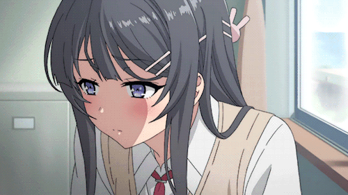
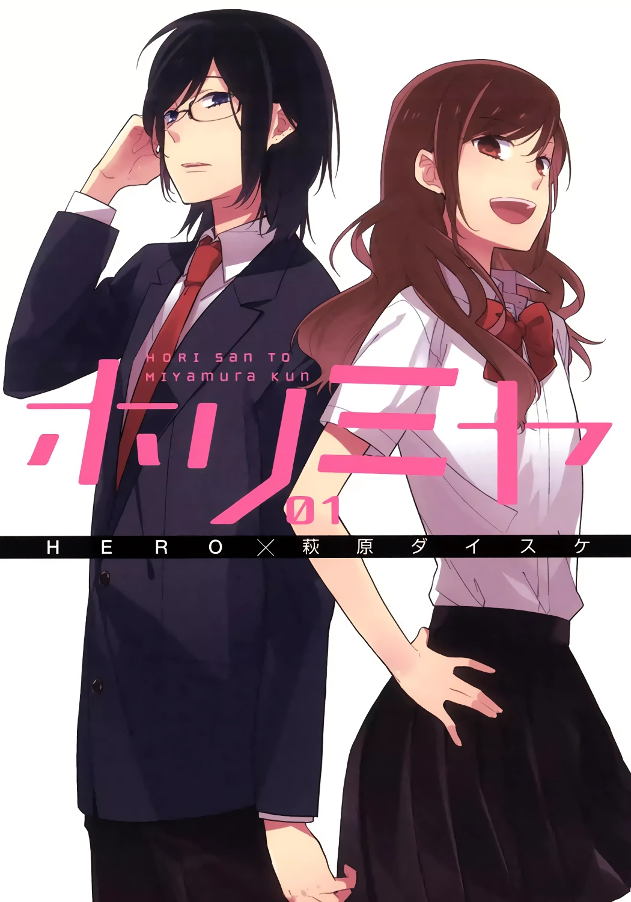
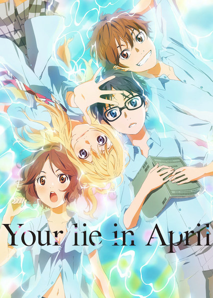

What Is An Romance-Based Anime?
The romance genre sometimes includes comedy to spice things up. The aspect of comedy often makes the anime relatable to our lives. This type of anime is also about love and sweet moments that the viewer can cherish. The focus of these shows is the romantic relationships between the show's characters as well as their growing love with one another. At times, you will find yourself hooked and interested in the relationships that the characters have with each other. Depending on the creator of the show, he or she will show the characters struggling to keep their relationship intact, since not every relationship is smooth-sailing. The romance genre has its wholesome moments, comedy, and relatable scenes. Here are a few examples of romance-based animes.
Horimiya
Horimiya! Where does this name come from? Well combine the last names of the two protagonists: Kyouko Hori and Izumi Miyamura, and you get Horimiya! These two characters get along together quite well which is the last thing in people's minds. Hori has a perfect combination of beauty and brains, while Miyamura is serious and shy to his classmates. Hori has little time to socialize with her friends due to housework. On the other hand, Miyamura's body has secret tattoos and piercings that make him look like a delinquent. These different personalities in character do not stop Hori and Miyamura from seeing each other, as they quickly become friends, spend a lot of time living with each other, and eventually become lovers. Although they are completely different individuals, they still have similarities which brings them together. IMDb rated the anime a 8.2/10 and it aired in 2021.
Rascal Does Not Dream of Bunny Girl Senpai
This anime is about "Puberty Syndrome", a rare disease which only affects teenagers. The symptoms are supernatural that hardly anyone recognizes it as a legitimate occurrence. One student who does notices it as a legitimate occurrence is high school student Sakuta Azusagawa. Mai Sakurajima, who is affected by this syndrome, cannot interact with society until Azusagawa sees her wandering the library in a bunny girl costume. Despite her outfit, Azusagawa approaches her and realizes that she is another victim of Puberty Syndrome. Although he tries to help her, he gets himself into a bigger mess as the syndrome gets out of control and starts affecting other people. Sakurajima's life changed when Azusagawa started helping her and without him, she would continue to live a lonely life. Does Azusagawa's actions cause Sakurajima to secretly fall in love with him? IMDb rated the anime a 8.1/10 and it aired in 2018.
Your Lie in April
Music is what drives Kousei Arima. This pianist's life changes as soon as his mother, Saki Arima, passed away. Kousei falls into a depressive state, which nearly ruins his musical talent. He cannot hear the sweet melody of his piano since he is distracted by his midlife crisis. After two years pass, Kousei is still unable to play the piano, leaving behind his admirers and rivals, and thus continues to live a depressive life with his friends Tsubaki Sawabe and Ryouta Watari. Things eventually change when Arima meets a beautiful violinist, Kaori Miyazono, who stirs up his world and sets him on the right path to play his instrument again. There is nothing like someone coming out of nowhere and helping you live a better life through encouragement and guidance. It is truly a blessing in disguise. Your Life in April is a roller coaster of emotions. After watching it, you will most likely not forget about it! IMDb rated the anime a 8.6/10 and it aired in 2014.
Clannad: After Story
Clannad: After Story, the sequel to Clannad, begins once Tomoya Okazaki and Nagisa Furukawa graduate from high school. Okazaki and Furukawa experience what it is like growing up together. Tomoya learns that a strong work ethic leads to success and discovers that Nagisa is a good partner who supports her. Through the couple's unity, they push forward to confront their personal life issues, which reinforces their old relationship and creates a greater bond than before. This anime contains some drama, highlighting the importance of love, unity, and how these two things can help cope with the struggles of adulthood. The transition to adulthood can be difficult if there is no one there to show you what to do or how to do it. IMDb rated the anime a 7.9/10 and it aired in 2007.